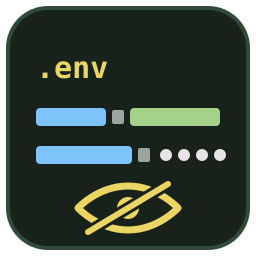
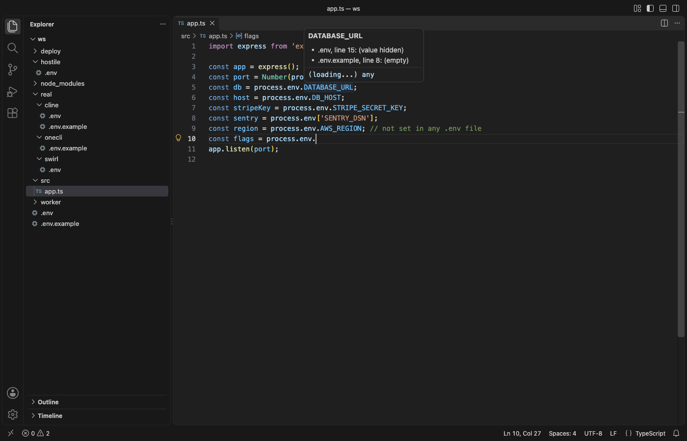

Dotenv & .env File Editor
Dotenv & .env File Editor, a VS Code extension by Zovo
Read and fix .env files in VS Code without putting your secrets on screen. Values of keys such as DB_PASSWORD or STRIPE_SECRET_KEY show as dots until the cursor is on their line, so you can share your screen or record a demo. Works offline, with no account.
Free, MIT license. Needs VS Code 1.90.0 or newer. Extension ID zovo.zovo-dotenv, version 0.1.0.

Questions people ask
Is Dotenv & .env File Editor free?
Yes. Dotenv & .env File Editor is free and MIT licensed.
How do I install Dotenv & .env File Editor?
Click "Install in VS Code" above, or search for zovo.zovo-dotenv in the Extensions view.
Free
- Syntax colors for
.env,.env.local,.env.production,*.envand.flaskenv: keys,export, quoted and unquoted values, multi-line values,${NAME}references, inline comments. - Secret values hidden on screen (display only, the file is not changed). The line under the cursor shows its value; the eye button in the editor title shows them all. Templates such as
.env.exampleare never hidden. - Problems with quick fixes: a key set twice, spaces around
=, a quote that is never closed, a line with no=, an invalid name, trailing spaces,${NAME}that no line sets. - Format Document removes the spaces around
=and trailing spaces; comments, order and quotes stay as they are. - Outline of the keys, and Copy the Value on This Line.
- From code: hover
process.env.DB_HOST,import.meta.env.VITE_URL,os.environ["X"],os.getenv("X"),os.Getenv("X"),ENV["X"],System.getenv("X"),env("X")and more to see which .env file sets it; F12 opens that line; completion offers the keys afterprocess.env..
Zovo Pro
Zovo Pro: USD 19 once. One payment unlocks the Pro tools in every Zovo extension. Each Pro tool has 3 free tries:
- Compare .env with .env.example: the keys missing from
.env, the keys.env.exampledoes not document and the empty ones, then add the missing keys to either file. Values from.envare never shown or copied. - Find keys missing in code or .env: reads the code of the workspace (JS, TS, Python, Ruby, Go, Java, Kotlin, C#, PHP, Rust, YAML, shell) and lists the variables that code reads and no
.envsets, and the keys no code reads, with file and line. - Convert .env to JSON, YAML, Kubernetes: a JSON object, YAML, a Docker Compose
environment:block, a Kubernetes Secret (base64) or ConfigMap, a GitHub Actionsenv:block with secrets as${{ secrets.X }}, or shell exports.
How to use it
Open any .env file. Problems show in the Problems panel; press Ctrl+. (Cmd+. on macOS) on one for its fix. Commands are under Dotenv in the Command Palette:
| Command | What it does |
|---|---|
| Show or Hide Secret Values | Shows every value until you click again or reload the window (also the eye button and the status bar item on .env files) |
| Copy the Value on This Line | Copies the value under the cursor, quotes and escapes removed, even while it is hidden |
| Open the Sample .env File | A made-up .env with every case |

Settings
envFile.maskValues:secrets(default: names with PASSWORD, TOKEN, SECRET, API_KEY, DSN, DATABASE_URL, ...),alloroff.envFile.unmaskedFiles: file names that are never hidden (default.env.example,.env.sample,.env.template,.env.dist,.env.defaults).envFile.diagnostics,envFile.codeHover,envFile.completion: turn each part off.envFile.hoverShowsSecrets: also show secret values in code hovers (default off).
The Pro tools in use

The Pro tools are in the Command Palette (they end in "(Pro)") and in the Explorer right-click menu of .env files and folders. Each one has 3 free tries on this computer; a try counts only when the tool produced its report or file (Escape or Cancel never uses one). Nothing about Pro shows when you open a file. envFile.showProTools: false hides all of it.
Zovo Pro is USD 19 once (team of 5: USD 59) and unlocks the Pro tools in every Zovo extension. Run Zovo Pro: Get Zovo Pro to pay by card, with GitHub Sponsors or PayPal, or to enter a key.
Privacy
No network requests and no telemetry. .env files are read on your computer only, and hidden values stay hidden in the outline, hovers and completions unless you turn that off.
Known limits
- Hiding is for the screen only. The text is still in the file, in the minimap shape and in search results, and copy and paste copy the real value.
.envrc(direnv) is a shell script and is left to shell extensions.- The code report sees literal names (
process.env.API_KEY,os.getenv("API_KEY")); names built at run time are not found. - Problems follow the
dotenvpackage rules; a few tools (Docker Compose v1, systemd) are stricter, which is what the warnings point out.
Guides
Install Dotenv & .env File Editor
Click the button to open VS Code and install it, or press Ctrl+P (Cmd+P on macOS) in VS Code and run ext install zovo.zovo-dotenv.
Free, MIT license. Needs VS Code 1.90.0 or newer. Extension ID zovo.zovo-dotenv, version 0.1.0.
Source code and issues are on GitHub.
Zovo Pro and support
Zovo Pro: USD 19 once, every Zovo viewer. It turns on the Pro tools in this extension and in the other Zovo extensions you use. The free features stay free.
After a card payment your license key shows on the next page. Paste it with the command "Zovo Pro: Enter a key".
You can also support the work with no Pro:
Need your format supported?
Open a format request with a sample file, and I reply there whether it can be done. For USD 299 once, through this GitHub Sponsors tier, I add your file format or a missing feature to this extension, with tests, within 7 days.